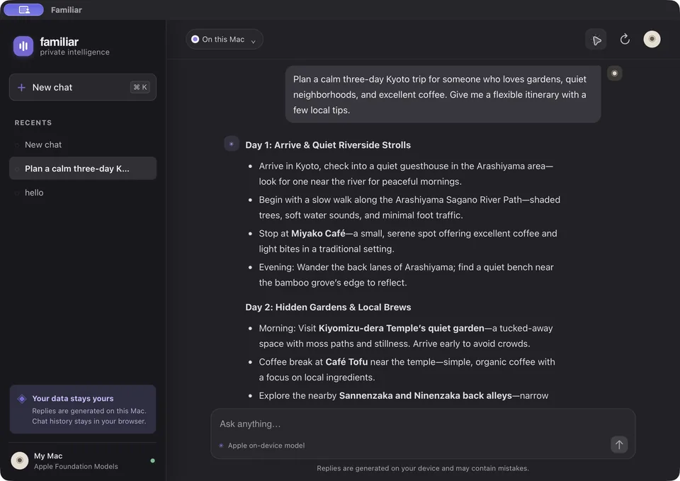

Familiar Local 2026
A private little chat app for your Mac that talks to Apple’s on-device Foundation Models, so nothing you type ever leaves the computer. A small Swift server listens only on 127.0.0.1 and serves a clean web chat, which opens in its own native window or in any browser. Keep separate conversations, each with its own memory, flip between light and dark themes, and grab a ready-made macOS app straight from the repo.